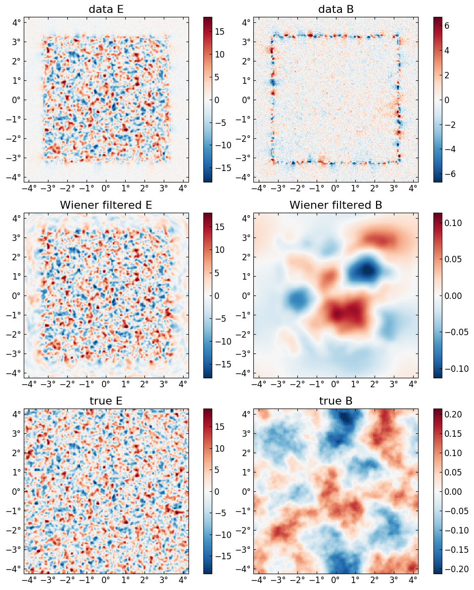

The Lensing Posterior
Much of what the CMBLensing package does is centered on the "CMB lensing posterior". We refer to either the "joint posterior",
where
- $f$ are the CMB fields (T/Q/U)
- $\phi$ is the lensing potential
- $\theta$ are any cosmological parameters
- $d$ is the data,
or the "marginal posterior",
which is simply the joint posterior marginalized over $f$.
We assume the following data model, which is generally flexible enough to handle real experiments:
where
- $\mathbb{L}(\phi)$ is the lensing operation
- $\mathbb{B}$ is an instrumental transfer function or "beam"
- $\mathbb{M}$ is a user-chosen mask
- $\mathbb{P}$ is a pixelization operation which allows one to estimate $f$ on a higher resolution than the data
- $n$ is the instrumental noise.
Given this model, the joint posterior (up to an unimportant normalization constant) in the "unlensed parameterization", is:
where
- $\mathbb{C}_n$ is the noise covariance
- $\mathbb{C}_f$ is the CMB covariance (i.e. the CMB T, E, and B $C_\ell$'s)
- $\mathbb{C}_\phi$ is the lensing potential covariance (i.e. $C_\ell^{\phi\phi}$)
and we have used the slighly sloppy notation $x^2/\mathbb{C}$ to mean $x^\dagger \mathbb{C}^{-1} x$.
It's often useful to parameterize this in terms of the lensed $\tilde f = \mathbb{L}(\phi) f$ (this reduces correlations), in which case we have the ""lensed parametrization":
Posterior basics
CMBLensing uses the function lnP to compute the log of the joint posterior probability.
using CMBLensinglnPlnP (generic function with 9 methods)To evaluate this posterior, we need the arguments of the probability distribution, $f$, $\phi$, and $\theta$. We also need the data $d$ and host of other operators and covariances which enter the expressions above, which CMBLensing stores in a DataSet object.
First lets load up some simulated data. We'll use 1$\mu$K-arcmin noise and a border mask:
@unpack f, ϕ, ds = load_sim_dataset(
θpix = 2,
Nside = 256,
T = Float32,
use = :P,
μKarcminT = 1,
mask_kwargs = (paddeg=1, nsources=0)
);The DataSet object, ds, stores all the aforementioned quantities:
fieldnames(typeof(ds))(:d, :Cn, :Cϕ, :Cf, :Cf̃, :Cn̂, :M, :B, :B̂, :D, :G, :P)For example, the data is:
plot(ds.d);
We can now evaluate the posterior, for example at the true $f$ and $\phi$:
-2*lnP(0, f, ϕ, ds)306882.90319405496The first argument, 0, indicates that this is in the unlensed parameterization. We could also use 1 for the lensed parametriation. (The 0 and 1 refer to auxillary "time" variable in the LenseFlow expansion, $f(x+t\nabla\phi)$; at $t=0$ we have the unlensed field, and at $t=1$ we have the lensed field). If we use the lensed parametrization, then the $f$ argument to the function is expected to be the lensed field.
-2*lnP(1, LenseFlow(ϕ)*f, ϕ, ds)307156.48902226775Any difference between these two is due only to the error in the LenseFlow inverse operation. The difference we see here is fine, but in theory we can make the difference arbitrarily small by cranking up the number of LenseFlow ODE steps:
let L = LenseFlow(ϕ,30)
-2*lnP(1, L*f, ϕ, ds, L)
end306882.88420174696We expect minus twice the posterior evaluated at the truth to be distributed like a $\chi^2$ distribution where the degrees of freedom equals the number of pixels in $d$, $f$, and $\phi$ (i.e. in each of the three Gaussian terms in the posterior). Since these maps are 256x256 and $d$ and $f$ have both Q and U maps, this is:
(2+2+1)*256^2327680which the previous result is within a few sigma of.
Above, we didn't specify any cosmological parameters, $\theta$. Because of that, they were fixed at their fiducial values (i.e. the fiducial values which generated the simulated data in the call to load_sim_dataset earlier). Current only two parameters can be varied, $r$ (tensor-to-scalar ratio), and $A_\phi$ (the amplitude of $C_\ell^{\phi \phi}$). They can be specified as follows, with non-specified parameters left at their fiducial:
-2*lnP(0, f, ϕ, (Aϕ=1.1,), ds)307200.19728863984You can see the slight change compared to what we got above. We can even compute a whole slice through the posterior along $A_\phi$:
Aϕs = range(0.5,1.5,length=50)
plot(Aϕs, [lnP(0, f, ϕ, (Aϕ=Aϕ,), ds) for Aϕ in Aϕs])
xlabel(raw"$A_\phi$")
ylabel(raw"$\mathcal{P}(f_{\rm true}, \phi_{\rm true}, A_\phi\,|\,d)$");
Wiener filtering
If we fix $\phi$ and $\theta$ then maximize the joint posterior, $\mathcal{P}(f,\phi,\theta\,|\,d)$, over $f$, we get
where
This is simply the Wiener filter of the data, and we can compute it by inverting the operator in brackets above with e.g. Conjugate Gradient.
In CMBLensing, the argmaxf_lnP function performs this task. Its arguments are similar to lnP,
f_wf = argmaxf_lnP(ϕ, (Aϕ=1,), ds, progress=true)[32mConjugate Gradient: 100%|███████████████████████████████| Time: 0:00:50[39mSince Wiener filtering is the best-fit of the joint posterior at a fixed $\phi$, it is effectively delensing the data by a given $\phi$. Here we are Wiener filtering at the true $\phi$, so this is perfect delensing.
Note below the large amount of B mode power in the data, as well as the aliasing near the border mask, and how this is removed in the Wiener filtered B, which visually is tracing the true B map up to the level of the noise.
plot([ds.d, f_wf, f], title=["data ", "Wiener filtered ", "true "] .* ["E" "B"]);
Posterior gradients
Marginal posterior